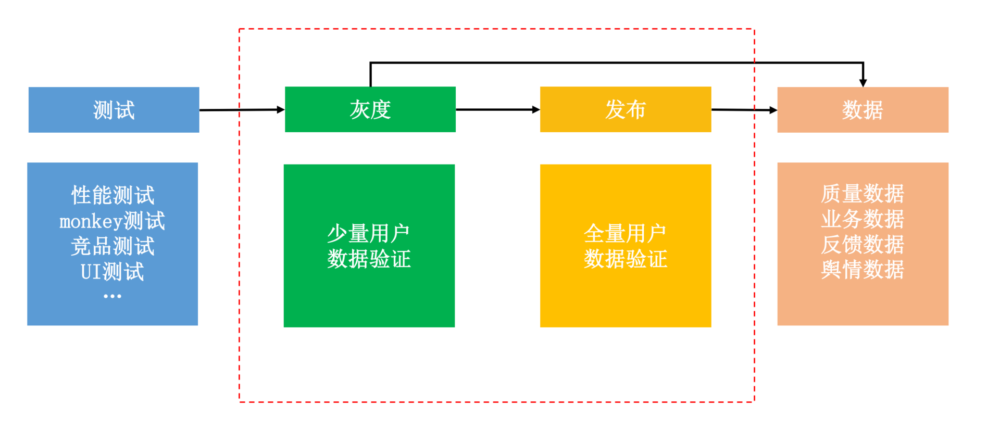
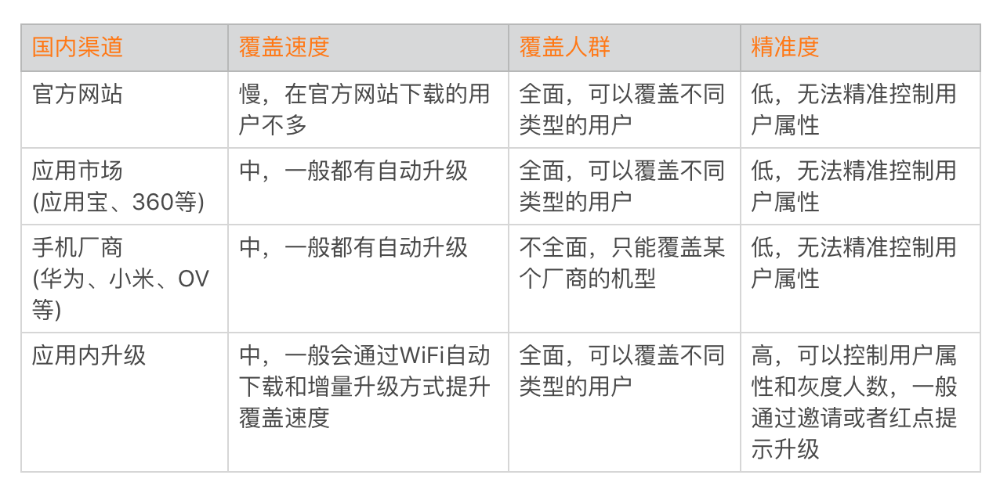
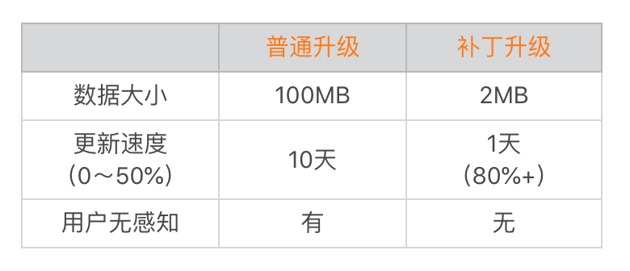
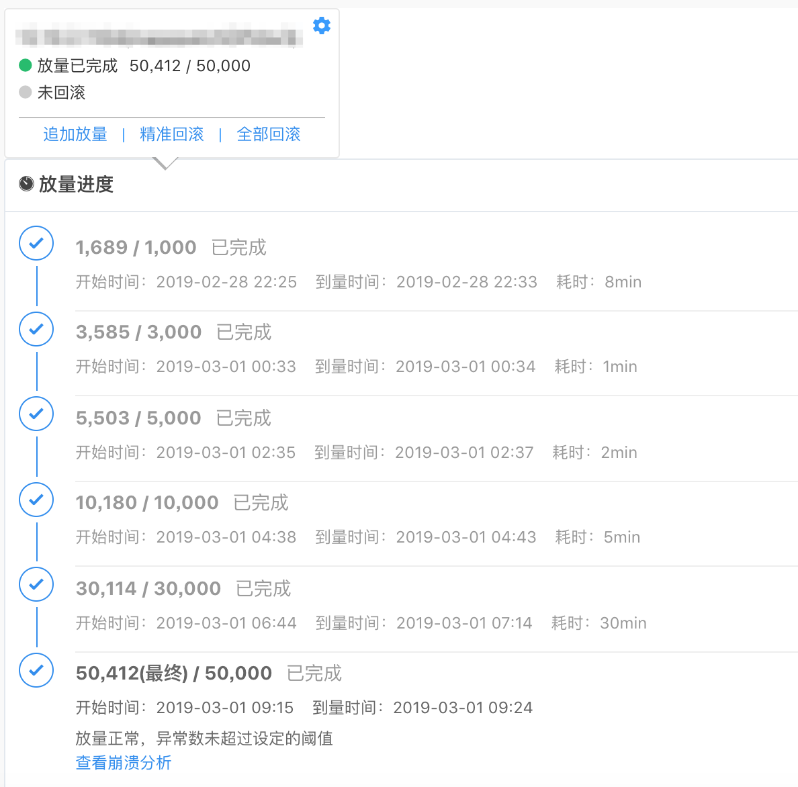
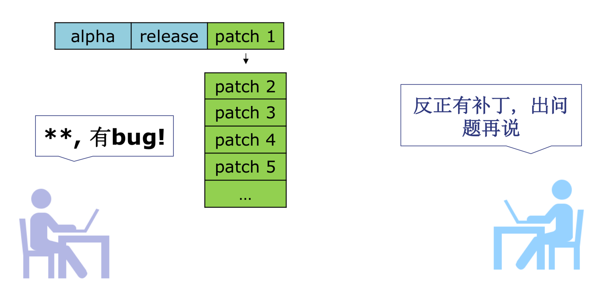
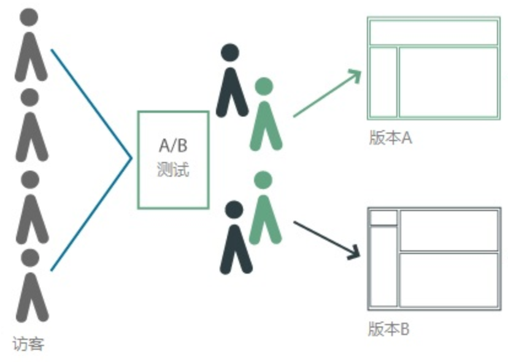
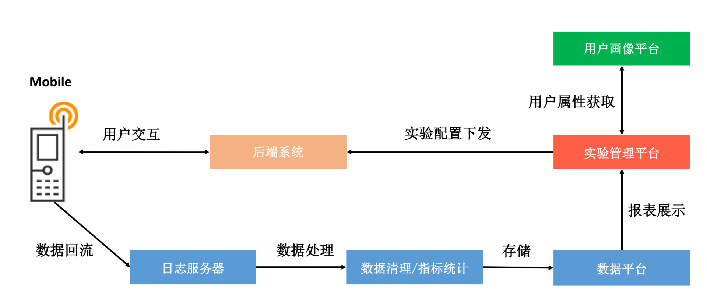
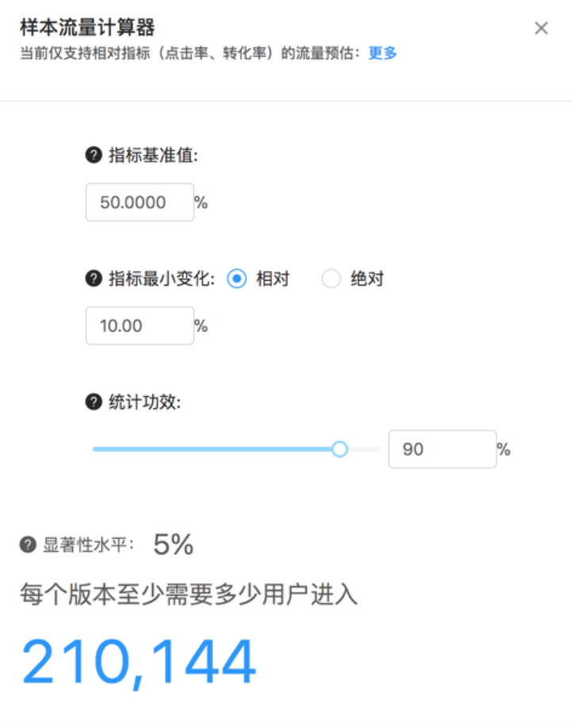
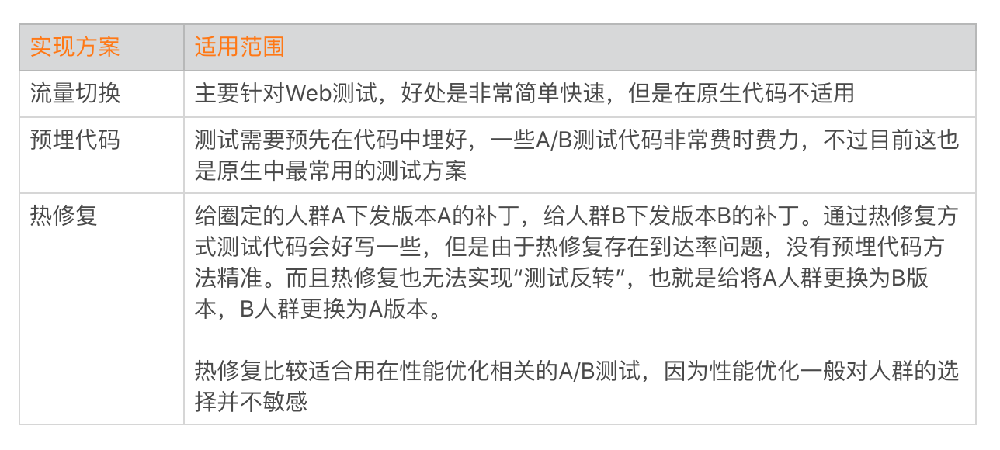
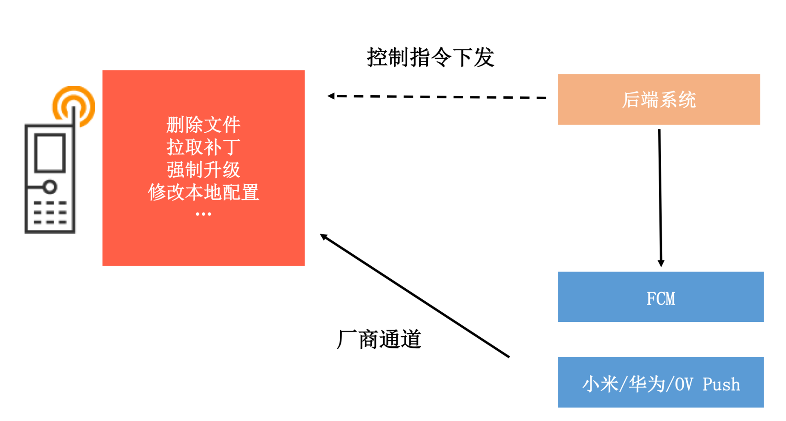

还记得我们在持续交付设定的目标吗？我前面提到过，天猫的效能目标是“211”，也就是 2 周交付周期、1 周开发周期以及 1 小时发布时长。对于一些更加敏捷的产品，我们可能还会加快到每周一个版本。在如此快的节奏下，我们该如何保证产品的质量？还有哪些手段可以进一步为发布“提速保质”？
更宽泛地说，广义的发布并不仅限于把应用提交到市场。灰度、A/B 测试 、运营活动、资源配置…我们的发布类型越来越多，也越来越复杂。该如何建立稳健的发布质量保障体系，防止出现线上事故呢？
APK 的灰度发布
我们在讨论版本发布速度，是需要兼顾效率和质量。如果不考虑交付质量，每天一个版本也很轻松。在严格保证交付质量的前提下，两周发布一个版本其实并不容易。特别是出现紧急安全或者稳定性问题的时候，我们还需要有 1 小时的发布能力。
正如我在专栏“如何高效地测试”中说的，实现“高质高效”的发布需要强大的测试平台和数据验证平台的支撑。

下面我们一起来看看影响版本发布效率的那些重要因素，以及我对于提升版本发布速度的实践经验。
1. APK 灰度
测试平台负责对发布包做各种维度的诊断测试，通常会包括 Monkey 测试、性能测试（启动、内存、CPU、卡顿等）、竞品测试、UI 测试、弱网络测试等。但是即使通过云测平台能够同时测试几十上百台机器，本地测试依然无法覆盖所有的机型和用户路径。
为了安全稳定地发布新版本，我们需要先圈定少量用户安装试用，这就是灰度发布。而数据验证平台则负责收集灰度和线上版本的应用数据，这里可能包括性能数据、业务数据、用户反馈以及外部舆情等。
所以说，灰度效率首先被下面两个因素所影响：
-
测试效率。虽然灰度发布只影响少部分用户，但是我们需要尽可能保障应用的质量，以免造成用户流失。测试平台的发布测试时间是影响发布效率的第一个因素，我们希望可以在 1 小时内明确待定的发布包是否达到上线标准。
-
数据验证效率。数据的全面性、实时性以及准确性都会影响灰度版本的评估决策时间，是停止灰度发布，还是进一步扩大灰度的用户量级，或者可以直接发布到全量用户。对于核心数据，需要建立小时甚至分钟级别的实时监控。比如微信，对于性能数据可以在发布后 1 小时内评估完毕，而业务数据可以在 24 小时内评估完毕。
另外一方面，如果我们的灰度发布想覆盖一万名用户，那多长时间才有足够的用户下载和安装呢？渠道的能力对灰度发布效率的影响也十分巨大，在国内主要有下面几个灰度渠道。

在国内由于没有统一的应用商店，灰度渠道效率的确是一个非常严峻的问题。即使是微信，如果不动用“红点提示”这个大杀器，每天灰度发布到的用户量可能还不到十万。而国际市场有统一的 Google Play，可以通过Google Beta进行灰度。但是版本发布需要考虑 GP 审核的时间，目前 GP 审核速度相比之前有所加快，一般只需要一到两天时间。
通过灰度发布我们可以提前收集少部分用户新版本的性能和业务数据，但是它并不适用于精确评估业务数据的好坏。这主要是因为灰度的用户是有选择的，一般相对活跃的用户会被优先升级。
2. 动态部署
对于灰度发布，整个过程最大的痛点依然是灰度包的覆盖速度问题。而且传统的灰度方式还存在一个非常严重的问题，那就是无法回退。“发出去的包，就像泼出去的水”，如果出现严重问题，还可能造成灰度用户的流失。
Tinker 动态部署框架正是为了解决这个问题而诞生的，我们希望 Tinker 可以成为一种新的发布方式，用来取代传统的灰度甚至是正式版本的发布。相比传统的发布方式，热修复有很多得天独厚的优势。

-
快速。如果使用传统的发布方式，微信需要 10 天时间覆盖 50% 的用户。而通过热修复，在一天内可以覆盖 80% 以上的用户，在 3 天内可以覆盖 95% 以上的用户。
-
可回退。当补丁出现重大问题的时候，可以及时回退补丁，让用户回到基础版本，尽可能降低损失。
为了提升补丁发布的效率，微信还专门开发了 TinkerBoots 管理平台。TinkerBoots 平台不仅支持人数、条件等参数设置，例如可以选择只针对小米的某款机型下发 10000 人的补丁；而且平台也会打通数据验证平台，实现自动化的控量发布，自动监控核心指标的变化情况，保证发布质量。

Tinker 发布已经两年多了，虽然热修复技术可以解决很多问题，但作为 Tinker 的作者，我必须承认它对国内的 Android 开发造成了一些不好的影响。
- 用户是最好的测试。很多团队不再信奉前置的测试平台，他们认为反正有可以回退的动态部署发布，出现质量问题并不可怕，多发几个补丁就可以了。

- 性能低下。正如专栏“高质量开发”模块所说的，热修复、组件化这些黑科技会对应用的性能产生不小的影响，特别是启动的耗时。
从现在看来，热修复并不能取代发布，它更适合使用在少量用户的灰度发布。如果不是出现重大问题，一般情况也不应该发布针对所有用户的补丁。
组件化回归模块化，热修复回归灰度，这是国内很多大型 App 为了性能不得不做出的选择。如果想真正实现“随心所欲”的发布，可能需要倒逼开发模式的变革，例如从组件化转变为 Web、React Native/Weex 或者小程序来实现。
A/B 测试
正如我前面所说，APK 灰度是对已有功能的线上验证，它并不适合用于准确评估某个功能对业务的影响。
If you are not running experiments, you are probably not growing！
——by Sean Ellis
Sean Ellis 是增长黑客模型（AARRR）之父，增长黑客模型中提到的一个重要思想就是“A/B 测试”。 Google、 Facebook、国内的头条和快手等公司都非常热衷于 A/B 测试，希望通过测试进行科学的、数据驱动式的业务和产品决策。
那究竟什么是 A/B 测试？如何正确地使用 A/B 测试呢？
1. 什么是 A/B 测试
可能有同学会认为，A/B 测试并不复杂，只是简单地把灰度用户分为 A 和 B 两部分，然后通过对比收集到的数据，分析得到测试的结论。

事实上 A/B 测试的难点就是 A 和 B 用户群体的圈定，我们需要保证测试方案是针对同质人群、同一时间进行，确保了除方案变量之外其他变量都是一致的，这样才能将指标数据差异归到产品方案，从而选出优胜版本在线上发布，实现数据增长。
-
同质。指人群的各种特征分布的一致性。例如我们想验证产品方案对女性用户的购买意愿的影响，那么 A 版本和 B 版本选择的用户必须都是女性。当然特征分布不光是性别，还有国家、城市、使用频率、年龄、职业、新老用户等。
-
同时。在不同的时间点，用户的行为可能不太一样。例如在一些重大的节日，用户活跃度会升高，那如果 A 方案的作用时间在节日，B 方案的作用时间在非节日，很显然这种比较对于 B 方案是不公平的。
所以实现“同质同时”，并不是那么简单，首先需要丰富和精准的用户画像能力，例如版本、国家、城市、性别、年龄、喜好等用户属性。除此之外，还需要一整套强大的后台，完成测试控制、日志处理、指标计算、统计显著性指标等工作。

实现了“同质同时”之后，我们接着要找到产品方案的显著性指标，也就是方案想要证明的目标。例如我们优化了弹窗的提示语，目的是吸引更多的用户点击按钮，那按钮的点击率就是这个测试的显著性指标。
有了这些以后，那我们是不是就可以愉快地开始测试了？不对，你还需要先思考这两个问题：
- 流量选择。这个测试应该配置多少流量？配少了怕得不出准确的测试结论，配置多了可能要承担更大的风险。这个时候就需要用到最小样本量计算器。

A/B 测试作为一种抽样统计，它背后涉及大量的统计学原理，而这个计算器需要我们提供以下数值：
基准线指标值：请输入测试要优化的指标的基准值，比方“某按钮的点击率”，如果该值每日在 9%～11% 之间波动，则可输入 10%。
指标最小相对变化：请输入你认为有意义的最小相对变动值。假设你将要优化的指标为 10% 时，你在最小相对变化中输入 5%， 就意味着你认为绝对值变化在（9.5%, 10.5%）之间的变动没有意义，即便此时测试版本更优，你也不会采用。
统计功效 1−β：如果设置统计功效为 90%，可通俗理解为，在 A/B 测试中，当版本 A 和版本 B 的某项统计指标本质上存在显著差异时，可以正确地识别出版本 A 和版本 B 是有显著差异的概率是 90%。
显著性水平α：如果统计指标的差异超过具体的差异，我们才说测试的结果是显著的。
- 天数选择。A/B 测试需要持续几天，我们才可以认为测试是可靠的。一般来说可以通过下面的方法计算。
测试所需持续的天数 >= 计算获得用户数 / (场景日均流量 * 测试版本设置流量百分比）2. 如何进行 A/B 测试
虽然各个大厂都有自己完善的 A/B 测试平台，但是 A/B 测试的科学设计并不容易，需要不断地学习，再加上大量的实践经验。
首先来说，所有的 A/B 测试都应该是有“预谋”的，也就是我们需要有对应的预期，需要设计好测试的每一个环节。一般来说，在测试开始之前，需要问清楚自己下面这些问题：
为了测试埋点、分流、统计的正确性，以及增加 A/B 测试的结论可信度，我们还会在 A/B 测试的同时，增加 A/A 测试。A/A 测试是 A/B 测试的“孪生兄弟”，有的互联网公司也叫空转测试。它主要用于评估我们测试本身是否科学，一般我推荐使用 A/A/B 的测试方式。
那在 Android 客户端有哪些实现 A/B 测试的方案呢？

用一句话来描述 A/B 测试的话就是，“拿到 A/B 测试的数据容易，拿到可信的 A/B 测试的数据却很难”，因此在指标设计、人群选择、时间设计、方案的设计都需要考虑清楚。同时也需要多思考、多实践，推荐你拓展阅读《移动 App A/B 测试中的 5 种常见错误》。
统一发布平台
我在专栏里多次提到，虽然我们做了大量的优化，依然受限于原生开发模式的各种天花板的限制。这时可以考虑跳出这些限制，例如 Web、React Native/Weex、小程序和 Flutter 都可以是解决问题的思路。
但是即使我们转变为新的开发模式，灰度和发布的步骤依然是不可或缺的。此外，我们还要面对各种各样的运营活动、推送弹窗、配置下发。
可能很多大厂的同学都深受其苦，面对各式各样的发布平台，一不小心就可能造成运营事故。那应该如何规范发布行为，避免出现下发事故呢？
1. 发布平台架构
每个应用都或多或少涉及下面这些发布类型，但是往往这些发布类型都分别放在大大小小的各种平台中，而且没有统一的管理规范流程，非常容易因为操作错误造成事故。
统一发布平台需要集中管理应用所有的数据下发业务，并建立严格规范的灰度发布流程。
-
管理。所有的发布都必须通过权限校验，需要经过审批。“谁发布，谁负责”，需要建立严格的事故定级制度。对于因为疏忽导致事故的人员，需要定级处理。
-
灰度。所有的发布一定要经过灰度测试，慢慢扩大影响的用户范围。但是需要承认，某些下发并不容易测试，例如之前沸沸扬扬的“圣诞节改变展示样式”的事件。对于这种在特定时间生效的运营活动，很难在线上灰度验证。
-
监控。统一发布平台需要对接应用的“实时数据平台”，在出现问题的时候，需要及时采取补救措施。
业务已经那么艰难了，如果下发了一个导致所有用户启动崩溃的闪屏活动，对应用造成的损失就难以衡量。所以规范的流程和章程，可以一定程度上避免问题的发生。当然监控也同样重要，它可以帮助我们及时发现问题并立刻止损。
2. 运营事故的应对
每天都有大量各种类型的发布，感觉就像在刀尖上行走一样。“人在江湖飘，哪能不挨刀”，当我们发现线上运营问题的时候，还有哪些挽救的措施呢？
-
启动安全保护。最低限度要保证用户不会由于运营配置导致无法启动应用。
-
动态部署。如果应用可以正常启动，那我们可以通过热修复的方式解决。但是热修复也存在一定的局限性，例如有 3%～5% 的用户会无法热修复成功，而且也无法做到立即生效。
-
远程控制。在应用中，我们还需要保留一条“救命”的指令通道。通过这条通道，可以执行删除某些文件、拉取补丁、修改某些配置等操作。但是为了避免自有通道失效，这个控制指令需要同时支持厂商通道，例如某个下发资源导致应用启动后界面白屏，这个时候我们可以通过下发指令去删除有问题的资源文件。

“万丈高楼平地起”，类似测试平台、发布平台或者数据平台这些内部系统很难短时间内做得非常完善，它们都是通过优化内部无数的小细节演进而来。所以我们需要始终保持耐心，朝着提升组织效能的方向前进。
总结
在过去那个做 A/B 测试非常艰难而且耗时耗力的年代，测试的每个环节都会经过千锤百炼。而现在通过功能强大的 A/B 测试系统，极大地降低测试的成本，提高了测试的效率，反而很多产品和开发人员变得有点滥用 A/B 测试，或者说有了“不去思考”的借口。
无论是研发主导的性能相关的 A/B 测试，还是产品主导的业务相关的 A/B 测试，其实很多时候都没有经过严谨的推敲，往往需要通过反反复复多次测试才能得到一个“结论”，而且还无法保证是可信的。所以无论是 A/B 测试，还是日常的灰度，都需要有明确的预期，真正去推敲里面的每一个环节。不要每次测试发布后，才发现实验设置不合理，或者发现这里那里漏了好几个数据打点，再反反复复进行修改，对参与测试的所有人来说都非常痛苦。
另外一方面，我们对某个事情的看法并不会一成不变。即使我是 Tinker 的作者，我也认为它只是某一阶段为了解决特定需求的产物。但是无论开发模式怎么改变，我们对质量和效率的追求是不会改变的。
课后作业
你的应用是否是 A/B 测试的狂热分子？对于 A/B 测试，你有哪些好的或者坏的的经历？欢迎留言跟我和其他同学一起讨论。
今天的课后作业是，思考自己的产品或者公司在灰度发布过程中存在哪些痛点？还有哪些优化的空间？请在留言中写下自己的心得体会。
COMMUNITY NOTES
读者评论
一味的A/B测试，导致好多冗余代码。。。。
打卡
TK是不是在国外google play不允许使用？